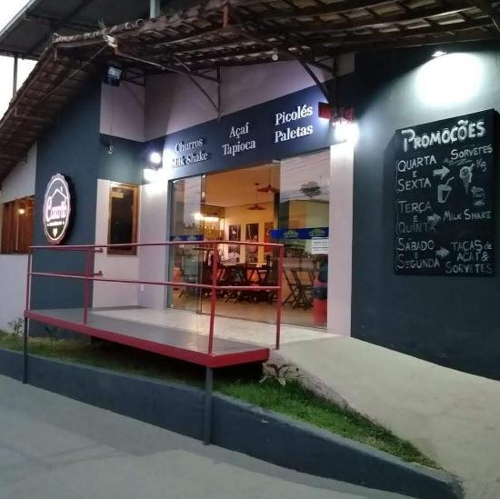
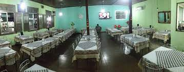

Praçinha da prefeitura

Eu gosto da Praça da Prefeitura pois é um ótimo lugar para relaxar da correria do dia a dia. Lá é possivel ter contato com a natureza e árvores centenárias mesmo em ambiente urbano(além de ter um lago de carpas que é bastante relaxante de se olhar)
Casarão
O Casarão é uma sorveteria/cafeteria que é bastante bacana, o ambiente é bem diferente dos outros lugares que existem em Alegre com uma decoração bem ímpar e estilo próprio.
Casa Velha
O Casa Velha(conhecido também como Old House) é um restaurante familiar com comida caseira e barato. Ideal pra comer no dia a dia e aceita o ticket de alimentação da empresa que eu trabalho.